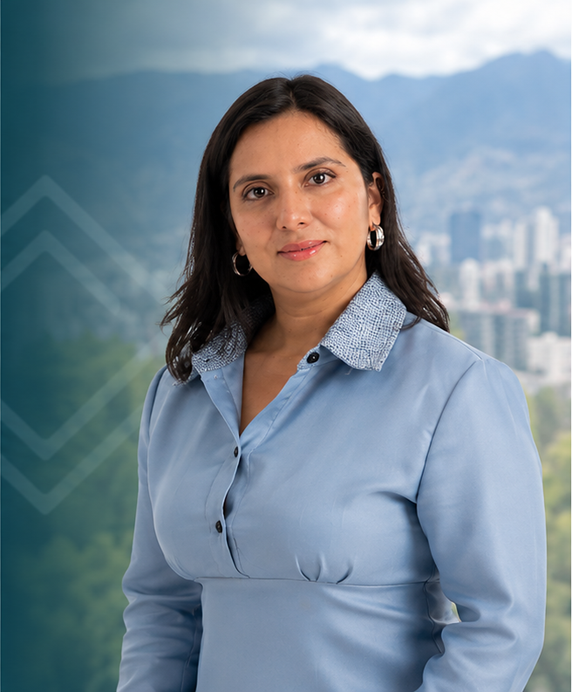

EXPERIÊNCIA DA TEMPOLEGAL
Organizações acompanhadas pelo escritório em diferentes serviços. Cada contratação tem escopo próprio.
Epidata; INISEG; HireX · Grupo Conéctate; Cámara de Comercio Exterior; Grupo Tasker; UINMA · âmbito educativo vinculado ao INISEG; EduLink · estrutura vinculada à CCE; GestiaGlobal · estrutura vinculada à CCE.
As marcas e sociedades vinculadas são apresentadas em seu contexto. Não representam oito grupos independentes nem comprovam o mesmo serviço em todos os casos.
Em que etapa está seu projeto?
Expansão de empresa estrangeira: analisar veículo, participação, poderes e presença local, conectando estabelecimento, representação, bancos e operação.
Fundadores e investidores: não é necessário ter uma empresa constituída no exterior. Revisamos atividade, participantes e necessidades antes de definir a estrutura.
Operação existente: apoio pontual ou contínuo em representação, contabilidade, questões jurídicas e administração delimitada, a partir da equipe e estrutura atuais.
Todo o percurso. Um escopo à sua medida.
Definir a estrutura: sociedade local com pessoas ou empresas estrangeiras, sucursal, estatutos, acordos, poderes, autorizações e holdings quando pertinentes. A SAS não é presumida adequada para todos os projetos.
Estabelecer e habilitar: constituição ou sucursal, nomeações, representação, domicílio fiscal, RUC, assinaturas, faturamento e procedimentos bancários ou setoriais contratados. Estabelecer uma sucursal é diferente de fornecer domicílio fiscal. Custos de terceiros são identificados.
Operar e dar continuidade: contabilidade, tributos, obrigações societárias, contratos, questões trabalhistas, back office documental, coordenação entre empresas, responsáveis e relatórios à matriz. Cada etapa tem entregas e condições próprias.
A conta empresarial também faz parte do processo.
Quando contratado, preparamos documentos, coordenamos com o banco, atendemos observações e apoiamos a habilitação da conta, banco eletrônico e autorizações. O banco define requisitos, aprovação e prazos; usuários, poderes e controle de fundos são definidos com a empresa.
Back office: arquivos e respaldos organizados, aprovações documentadas, tarefas entre empresas, responsáveis, matrizes e relatórios acordados. Implantação e suporte recorrente têm escopos separados; nem toda tarefa está incluída em qualquer contratação.
Estabelecimento. Coordenação. Operação.
Grupo Tasker, Peru: constituição de quatro companhias equatorianas e coordenação bancária, contábil, trabalhista e de propriedade intelectual em diferentes negócios.
Epidata, Argentina: constituição, representação, domicílio fiscal, contabilidade e tributos, coordenação bancária e implementação de proteção de dados na operação tecnológica no Equador.
Cámara de Comercio Exterior, vinculada ao Peru: constituição de Cámara de Comercio Exterior, EduLink e GestiaGlobal, com representação, domicílio fiscal, contabilidade e proteção de dados conforme cada encargo.
São sínteses de escopos realizados, sem presumir contratação de todos os serviços ou resultados equivalentes. A coordenação ocorre desde Quito; origens de clientes não representam escritórios no exterior.
Conheça nossa equipe
Juan e Daniela coordenam os assuntos empresariais e societários. Os especialistas em contabilidade, finanças e privacidade participam quando a contratação exige.
Juan Alberto Gómez
Advogado · Sócio fundador
Especialista em soft landing e empresas estrangeiras
Coordenação jurídica e estrutura empresarial.
Ver perfil ↗
Daniela Barahona
Advogada · Mestre
Advogada sênior
Assuntos corporativos e trabalhistas da operação.
Ver perfil ↗
Emillie Donoso
Advogada · Mestre
Advogada sênior
Proteção de dados e conformidade regulatória.
Ver perfil ↗
Rolando Valencia
Engenheiro
Coordenador de Serviços Financeiros
Finanças e administração da operação.
Gabriel Calvopiña
Engenheiro · Mestre
Coordenador de Serviços Contábeis e Tributários
Contabilidade e obrigações tributárias.
Ver perfil ↗A proposta identifica a coordenação e a participação de cada área. Nem todos os profissionais participam de cada assunto.
Experiências de clientes
Depoimentos sobre diferentes serviços do escritório. As referências preservam o contexto de cada experiência; não significam que todos contrataram o mesmo serviço.
Eleazar Becerra
Diretor-geral e acionista principal · Cámara de Comercio Exterior
Quando decidimos desenvolver nossas atividades no Equador, precisávamos de muito mais do que constituir uma companhia. Era necessário organizar a estrutura societária, a representação local e os assuntos contábeis, tributários e de conformidade.
A TempoLegal tem nos acompanhado na estruturação de nossas empresas e nessas necessidades, incluindo a proteção de dados pessoais. Para nós, que coordenamos negócios em diferentes países, é uma vantagem ter uma equipe local que conhece nossa operação e à qual podemos recorrer diretamente.
Essa combinação de assessoria jurídica e apoio prático tem facilitado nosso trabalho no Equador. É o tipo de acompanhamento que eu recomendaria a outras empresas que desejam se estabelecer e operar no país.
Pablo Lucio Paredes
Economista · Diretor do Instituto de Economia da USFQ
Trabalhar com a Tempo Legal foi uma decisão positiva para minha empresa e minhas necessidades pessoais. Recebi uma assessoria clara e próxima; a equipe entendeu minhas necessidades, explicou os passos do processo e esteve disponível para esclarecer minhas dúvidas. Além do conhecimento jurídico, valorizei especialmente seu compromisso e a atenção personalizada durante todo o processo. Assim pudemos avançar com segurança e nos concentrar em nossas obrigações, sabendo que os aspectos jurídicos estavam em boas mãos. Sem dúvida, recomendaria a Tempo Legal. De fato, trabalho e continuarei trabalhando com eles
Depoimento pessoal; a afiliação não implica aval institucional.
Francisco Mosquera Aulestia
Presidente e acionista majoritário · Grupo Mosquera Aulestia (GMA)
Na GMA temos várias empresas e uma operação logística que não para. Precisamos de uma assessoria jurídica que entenda essa realidade e não se limite à teoria.
A TempoLegal nos acompanha há anos em questões trabalhistas, societárias, contratuais e de proteção de dados pessoais. Conhecem o funcionamento do grupo, por isso, quando surge um problema, podemos ir direto ao que importa.
O que mais valorizo é que nos ajudem a prevenir riscos e nos ofereçam alternativas claras para resolver situações concretas. Para um grupo empresarial como o nosso, contar com advogados que conhecem a operação e estão presentes quando precisamos faz a diferença.
Ana Cecilia Andrade
Gerente geral da FL Procesados del Ecuador S.A. · Acionista única da FLP Holding Ecuador · Grupo FLP
Na FLP há assuntos que exigem uma resposta imediata e outros que precisam de acompanhamento durante meses. Para mim, faz muita diferença contar com uma equipe que já conhece nossas empresas.
A TempoLegal nos apoia em questões trabalhistas, societárias e contratuais e, além disso, cuida da contabilidade da FLP Holding Ecuador. Poder coordenar a parte jurídica e contábil com a mesma equipe facilita muito nosso trabalho.
Não precisamos explicar do zero a história de cada companhia nem procurar a quem recorrer conforme o problema. Sabemos com quem falar e podemos dar continuidade aos assuntos pendentes. No dia a dia de uma empresa, isso vale muito.
Antes de contratar
O escopo é definido para sua empresa e para a decisão que precisa tomar.
Preciso ser equatoriano ou ter visto para ser acionista?
Não. Estrangeiros podem participar do exterior, cumprindo identificação, documentação e registro. Ser acionista não autoriza automaticamente residência ou trabalho. Migração, representação, assinaturas, poderes e via de constituição são analisados conforme o caso.
O que inclui o Soft Landing?
Definir o estabelecimento, gerir a implantação e organizar suporte à operação. Conforme o projeto: estrutura, constituição ou sucursal, representação, domicílio fiscal, bancos e serviços jurídicos, contábeis ou administrativos. A proposta identifica entregas, etapas, responsáveis e serviços recorrentes.
Preciso de uma companhia nova ou de uma sucursal?
Depende da atividade, propriedade, compromissos da matriz e operação. As alternativas são distintas e exigem análise prévia. A SAS não é uma solução automática para todos os casos.
Podem ajudar se não tenho empresa no exterior?
Sim. Partimos também do projeto de um fundador ou investidor, avaliando atividade, participantes e suporte. Residência pessoal e contas bancárias pessoais exigem análise distinta e não se presumem incluídas.
Inclui abertura de conta empresarial?
Podemos incluir documentos e coordenação bancária no escopo. O banco controla requisitos, verificações e aprovação. A proposta define nossas tarefas e as atuações da empresa; não garantimos aprovação ou prazo universal.
Qual a diferença entre domicílio fiscal, representação e sucursal?
Domicílio fiscal é o endereço para os fins aplicáveis; representação trata de poderes e responsabilidades de quem atua pela empresa. Estabelecer a sucursal de uma companhia estrangeira é outro procedimento. Cada serviço é delimitado.
O apoio pode continuar após a constituição?
Sim. Serviços jurídicos, contábeis e administrativos recorrentes especificam tarefas, responsáveis e coordenação. Implantação e continuidade têm condições próprias; constituir não inclui automaticamente todos os serviços mensais.
Quanto custa e quanto demora?
Depende da estrutura, entidades, documentos, terceiros e suporte posterior. Após analisar o projeto, a proposta identifica etapas, honorários e custos externos pertinentes. O serviço integral não usa automaticamente o preço ou prazo de uma SAS padrão.
Podem apoiar uma empresa já operando no Equador?
Sim. Necessidades pontuais ou continuidade em organização societária, representação, contratos, contabilidade e tarefas administrativas definidas. Entendemos o que funciona e a equipe existente; não é necessário constituir outra empresa.